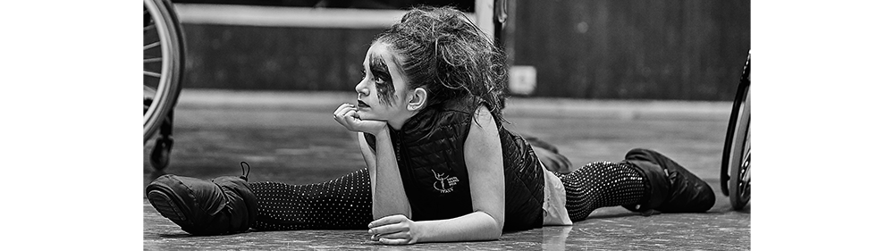
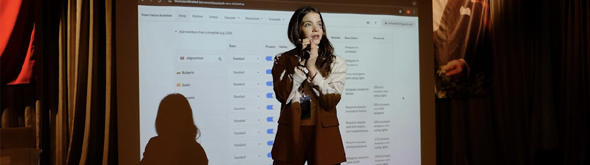
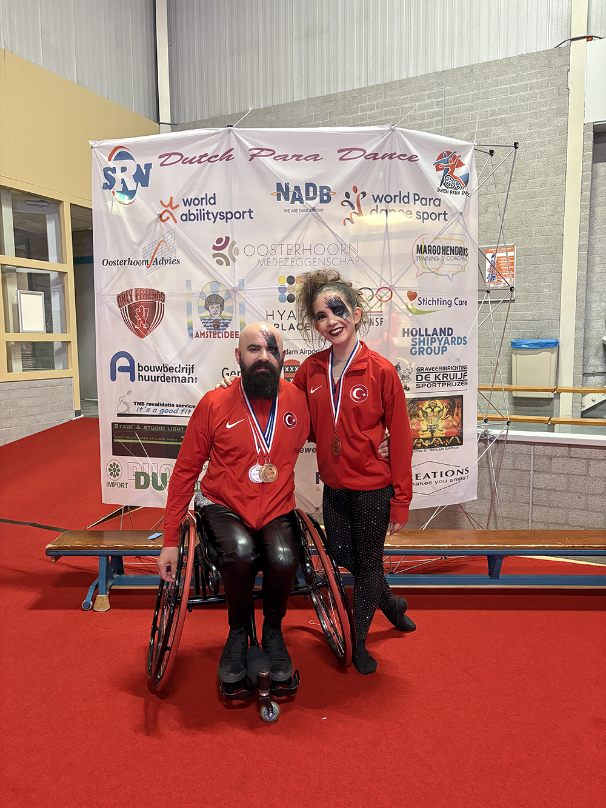
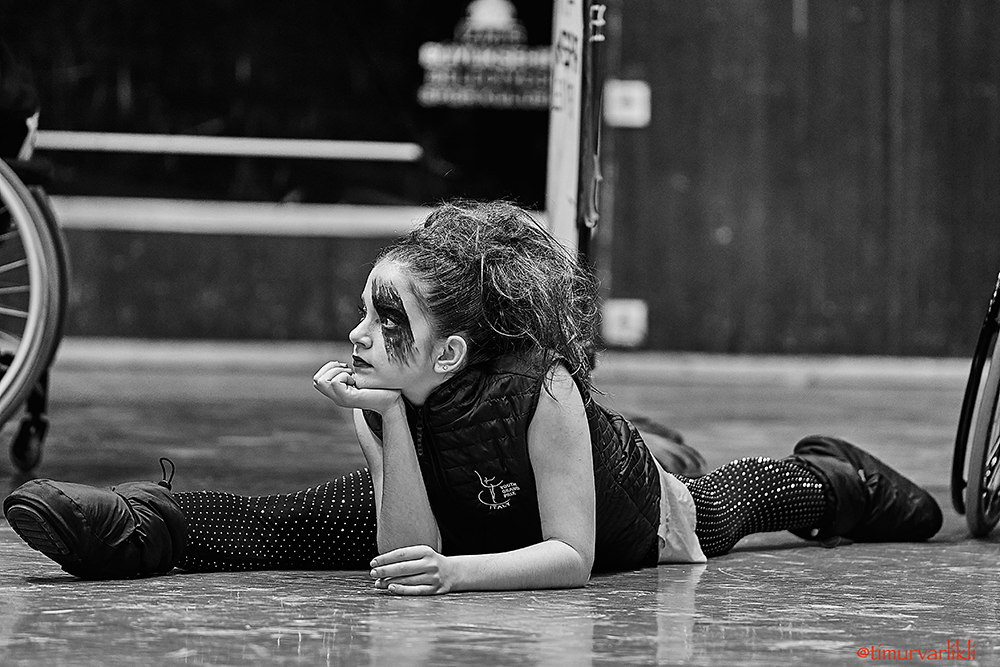
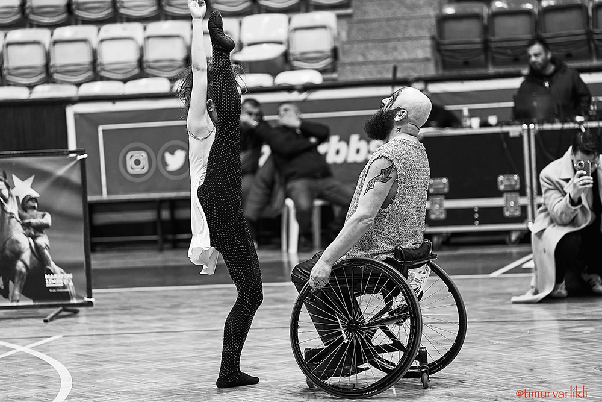
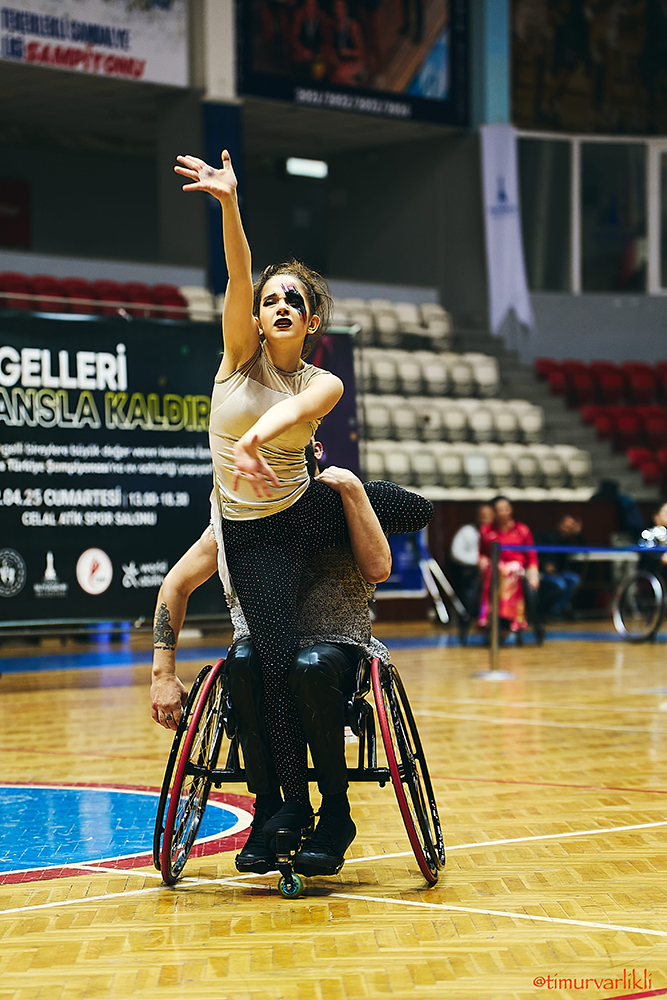
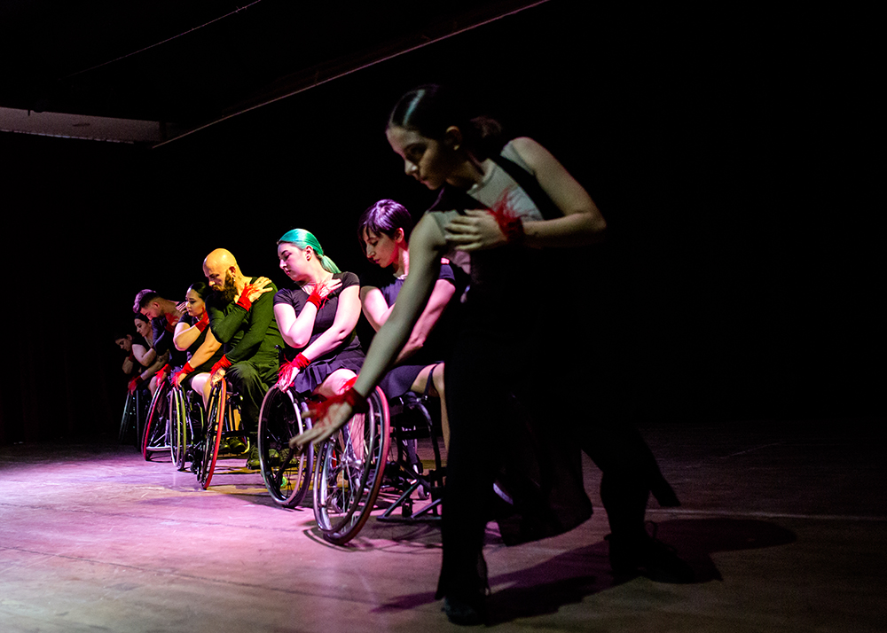
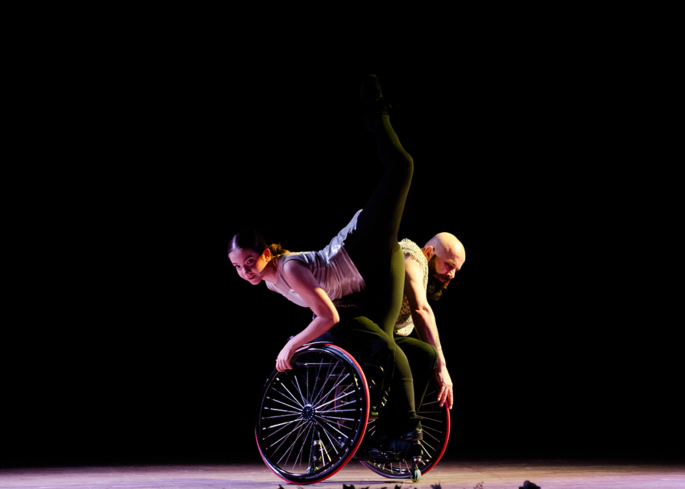
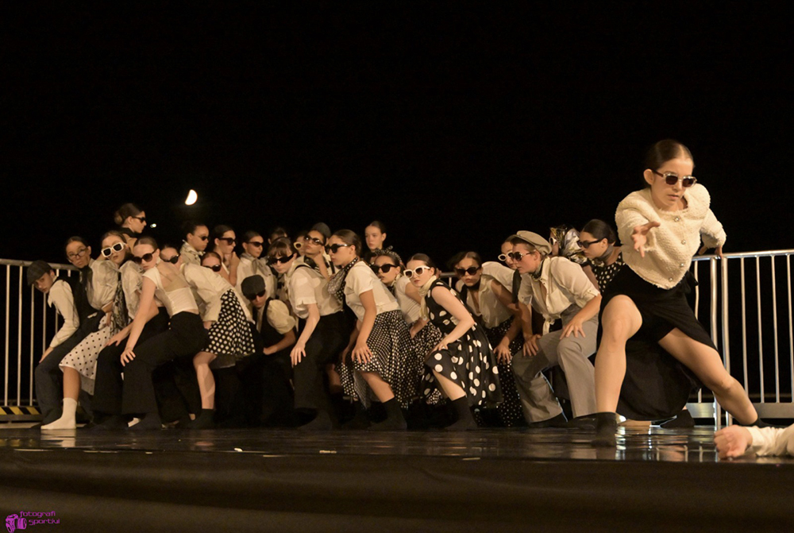
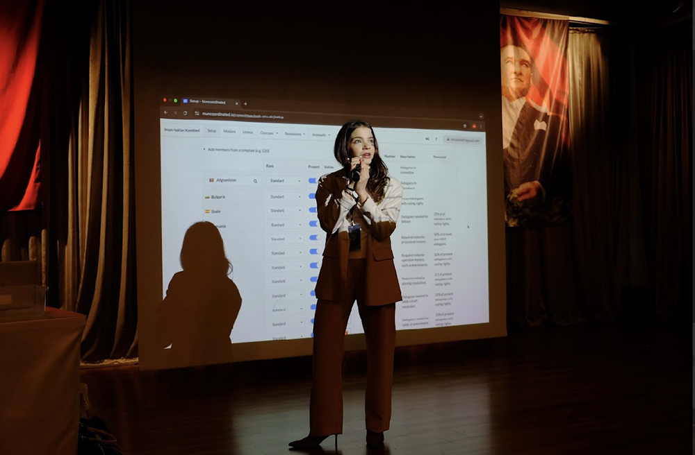

- maya.kanun.uni@gmail.com
I'm Maya Kanun
Education
Izmir Private Tevfik Fikret High School
Senior Student | Anticipated Graduation - June 2026
- Follow the Turkish High School Curriculum with the LabelFrancÉducation certification
- Distinctions: Received High Honor Certificates for high GPA in Grades 9 (88.15), 10 (91.33) & 11 (91.64)
Experience
Yelgin Law & Consultancy Bureau
Intern, part-time
- Gained knowledge on international legal agreements and national lawsuits
- Accompanied visits to the courthouse to observe document drop-offs and retrieval procedures
- Learned about KVKK (Turkish Personal Data Protection Law) and the basics of how to read a file case
T.C. Seferihisar Municipality, Legal Affairs Directorate
Intern, part-time
- Acquired insights into municipal operations and international organization collaborations
Leadership Skills
Guzelbahce Interact Club
President
- Started as the treasurer in 2022, promoted to Vice President in 2023, and later to President in 2024
- In 2022-2023, acted as the District 2440 (İzmir, Bursa, Marmaris, Çanakkale, Denizli, Aydın, Manisa) Culture and Arts Committee President
- Assisted Rotary Club with the advertisements of several events, such as the Rotary Youth Leadership Awards, to Interact clubs in our district, and represented the Interact club at the “Republic Concert” organised with the Olten Philharmonic Orchestra
- Led over 20 social, cultural, and educational projects, including cancer awareness seminars, humanitarian fundraisers, and international youth events as president; and directed multiple community service events including beach clean-ups, animal welfare initiatives, and educational seminars as vice president
- Oversaw the communications between the Interact clubs in District 7210 (New York) and invited other District 2440 Interact clubs in our area to facilitate more collaborations in the future
- Represented the club in international forums such as the 3rd International Youth & Peace Forum at Yasar University, and organized a modern dance performance at the opening ceremony in April 2024
- Was awarded "Rotarian of the Month" by the district governor for outstanding leadership and contribution in October 2023 while president
- Was awarded 1st place at the Interact Academy Committee and 3rd place at the Culture and Arts Committee for outstanding project leadership in June 2023, while vice president
Dancing Activities
Certifications: Ballet & Teaching

Select National & International Tournament Activities
Dutch Para Dance Sport International Competition
Turkey Para Dance Sport Championship
European Para Dance Sport Championship
Para Dance World Championship
International Workshops & Training Activities
Other Notable Activities
Academic Enrichment
Global Masterminds Olympiads Project Team Member
Extracurricular Activities

Model United Nations (MUN)
Choreographer & Dancer for the Tevfik Fikret High School French Theatre Club
Social Responsibilities
National Athlete in the Wheelchair Dance Project
Other Various Volunteering Activities
Photography
Para Dance National & International Championships - April 2025




Wheelchair Dance Project - Various


Other


Skills
Languages
- Turkish (Native)
- English (C1, IELTS Academic 7.5, Feb 2025)
- French (B2)
- Italian (A2)
Technical
- Microsoft Word
- Microsoft Excel
- Microsoft PowerPoint